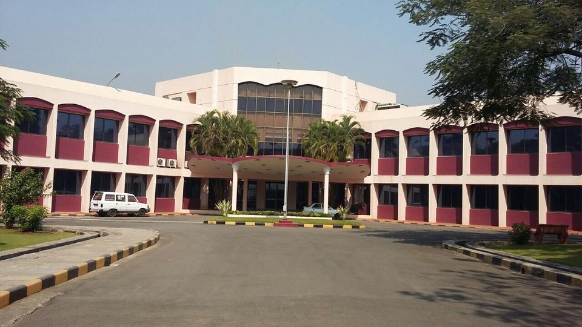

C-DAC MUMBAI

C-DAC, Mumbai (formerly National Centre for Software Technology) was established in the year 1985 as a National Laboratory, for R&D in Software Technology. Currently, the centre is having its offices in Juhu (Mumbai), Kharghar (Navi Mumbai) and Nariman Point (Mumbai)
From the decades, the centre is carrying out R&D in Software-intensive System and Technologies for various sectors. This has help C-DAC to Enhance India's role as a leader in Software Engineering and Allied Disciplines. Govt. of India which aims to make all Government services accessible to the common man in his locality, through common service delivery on state and national level.
Apart from this, centre is also involved in Language Computing, Computer Networks and Internet Engineering, IT Systems and Solutions, Knowledge based Computer Systems, Educational Technology Unit, Open Source Software and Biometrics.Since 2011-2012, CDAC Mumbai is offering the well-established 6 months’ full-time Post-Graduate Diploma in Advanced Computing (PG-DAC) and Mobile Computing (PG-DMC) for MSc/MCA/Engineering graduates.
Every year, two batches of these courses are commenced in August and February. Students are admitted through the national admission test, C-CAT.
With the right blend of academic and industry-oriented pedagogy, C-DAC Mumbai has always achieved excellent placement records of up to 100%.
The educational role of the centre conducts a well-established One-year Full-time Diploma in the field of Advanced Software Technology (FPGDST) for graduates and a Six-month Part-time Diploma in the field of Information Security (PGDIS).